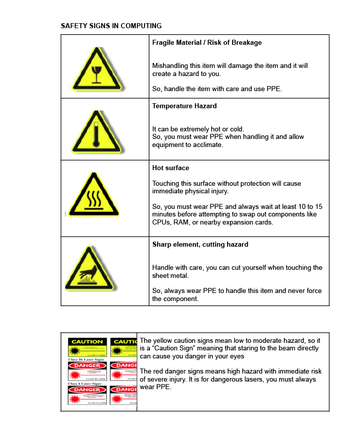
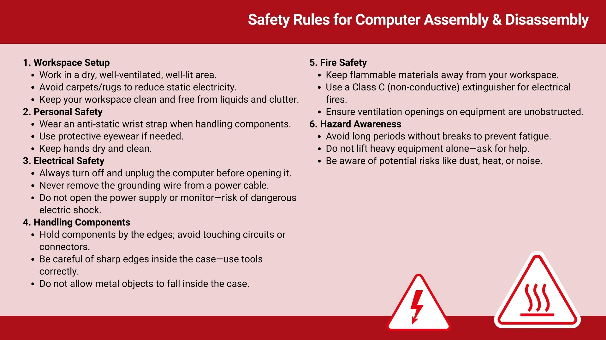

Protocols de seguretat¶
Abans de treballar amb maquinari informatic, es essencial entendre i aplicar les normes de seguretat que protegeixen no nomes els equips, sino tambe les persones que els manipulen i el medi ambient. Fins i tot petits errors durant el desmuntatge o el muntatge poden provocar lesions, danys als components o riscos com incendis i descarrregues electriques. Seguint les normes de seguretat, garantiu un entorn d’aprenentatge segur i desenvolupeu bons habits professionals que us serviran al llarg de la vostra carrera.
En aquesta seccio revisarem vuit arees clau de seguretat que us guiaran en la feina:
Seguretat al lloc de treball
Prevencio d’accidents
Factors generals de risc
Factors generals de risc en la manipulacio d’ordinadors
Senyals de seguretat
Precaucions al taller
Metodes i sistemes d’extincio d’incendis
Primers auxilis
Electricitat a l’ordinador: riscos laborals i proteccio ambiental¶
1) Seguretat al lloc de treball¶
Es el conjunt de tecniques i procediments orientats a eliminar o reduir el risc d’accidents laborals i els danys que poden causar: principalment a les persones, pero tambe als bens i al medi ambient.
El seu objectiu es prevenir els accidents laborals evitant-ne l’aparicio o minimitzant-ne les consequencies immediates sobre les persones i els bens. Per tant, la seguretat laboral no nomes considera els accidents que causen lesions, sino tambe aquells que potencialment en podrien causar.
2) Prevencio d’accidents¶
La seguretat te com a finalitat prevenir accidents laborals, que son essencialment esdeveniments anormals, no intencionats i no desitjats que es produeixen de manera inesperada i, normalment, evitable. Interrompen l’activitat laboral normal i poden causar lesions a les persones. Hi ha situacions que poden conduir a accidents, amb lesions o sense (incidents).
Per prevenir accidents, cal:
Coneixer els riscos als quals estem exposats
Entendre que un accident pot passar en qualsevol moment
Ser conscients que tambe us pot passar a vosaltres
Comprendre les consequencies reals dels accidents
Estar informats de les perdues humanes i economiques que poden causar
3) Factors generals de risc¶
Entorn ambiental: Ha de garantir confort termic, visual i acustic. La manca d’aquests factors pot conduir a errors que causin accidents o, simplement, irritabilitat. Una situacio confortable es aquella en que les variables ambientals no generen distraccions, fatiga ni incomoditat. L’objectiu es assegurar que la persona no experimenti malestar que en distregui l’atencio o li impedeixi centrar-se en elements importants per a la seva salut i seguretat.
Organitzacio: Un element clau de l’entorn es com s’organitza la feina (formacio, informacio, comunicacio, relacions de grup, etc.), que tambe ha de ser confortable i ben adaptada als treballadors.
Confort psicologic: Es menys evident que el confort fisic o mental i depen dels trets individuals de cada persona. La psicologia ens ajuda a agrupar comportaments per preveure reaccions. El malestar pot apareixer a curt termini (irritabilitat, ansietat), a mitja termini (alteracions del son, cefalees tensionals) o a llarg termini (depressio, trastorns gastrointestinals, cardiovasculars o cutanis), afectant les persones tant dins com fora del lloc de treball.
4) Factors generals de risc en la manipulacio d’ordinadors¶
Installacions electriques: Els sistemes informatics funcionen amb electricitat, que pot provocar descarrregues electriques a la persona treballadora.
Materials amb risc d’incendi: Els curtcircuits electrics poden provocar incendis no nomes a l’ordinador, sino tambe a la installacio electrica de l’edifici.
Manipulacio d’eines o components: L’us d’eines o peces d’ordinador comporta riscos per a la persona treballadora.
Entorn de treball: Soroll, humitat, pols, fred, etc., poden afectar la salut de la persona treballadora.
Postures forçades: La postura que adoptem durant la feina diaria pot provocar problemes fisics.
Manipulacio de carregues: Transportar materials pesants pot causar lesions fisiques.
Carrega mental i addiccio: Concentrar-se durant llargs periodes tambe pot ser un factor de risc. L’us excessiu de l’ordinador pot portar a addiccions (Internet, jocs, missatgeria, xarxes socials, etc.) que cal abordar abans que esdevinguin problemes de salut.
5) Senyals de seguretat¶
Es important coneixer i respectar els senyals d’advertencia que apareixen en diferents elements.




A mes de les precaucions, tambe comprovarem si compleixen la normativa principal de seguretat, especialment la de la Unio Europea.
Regulat pels Estats Units i el Canada (Es pot trobar en discs durs, disqueteres…)

Regulat per la Unio Europea (Ha superat les normes de seguretat de la Unio Europea)

Normes europees de certificacio electrica (Ha superat les normes de seguretat electrica de la Unio Europea)

Regulat per normes alemanyes (TEST) (Geprufte Sicherheit)

6) Precaucions al taller¶

Ubicacio: Trieu un espai de treball sec i ben ventilat. Hi ha d’haver prou llum per veure clarament tots els components. Eviteu zones amb catifes, ja que tendeixen a generar electricitat estatica. Una bona opcio es una superficie nua i connectada a terra.

Electricitat estatica: L’electricitat estatica es el perill mes gran per a les peces que muntem. Fins i tot una descarrega minima, massa petita per notar-la, pot malmetre peces electoniques cares i delicades, com la CPU, la RAM i altres xips. Es important utilitzar una polsera antielectrostatica.

Font d’alimentacio: Apagueu l’ordinador i desconnecteu-lo de la font d’alimentacio abans d’installar o retirar components. Si hi ha electricitat circulant pels components mentre els manipuleu, es poden danyar, inclosa la placa base. No talleu ni retireu mai el cable de presa de terra del cable d’alimentacio. Aquesta mesura de seguretat protegeix de possibles descarregues d’alt voltatge entre l’ordinador i la persona usuaria.

Talls: Els talls poden produir-se en utilitzar eines punxants (tornavisos, pelacables, ganivets, etc.) o per peces metal-liques tallants dins l’ordinador. Aneu amb compte amb les vores esmolades, sobretot a l’interior de l’equip. Manipuleu amb cura la carcassa i els components per evitar tallar-vos les mans. (Les vores esmolades de la carcassa es poden suavitzar amb paper de vidre abans del muntatge.)

Desmuntatge de components: Eviteu desmuntar components electronics com la font d’alimentacio o el monitor, ja que es molt perillos. Contenen condensadors d’alt voltatge que poden causar descarrregues electriques greus si es toquen. Podeu rebre una descarrega severa o fins i tot mortal, encara que la unitat estigui desconnectada, perque emmagatzemen molta energia.

Toxicitat: Alguns components electronics poden ser toxics, de manera que hi estem exposats, normalment a traves de ferides.

Curtcircuit o incendi: Un incendi pot ser causat per un curtcircuit electric, un sobreescalfament o fins i tot l’explosio d’una bateria. Cal evitar tenir liquids conductors a prop mentre manipulem l’ordinador (cafe, aigua, etc.) i impedir que caigui cap objecte metallic dins la carcassa mentre l’ordinador estigui connectat. Es important comprovar que les reixetes de ventilacio no estiguin obstruides i funcionin correctament.
7) Metodes i sistemes d’extincio d’incendis¶
Metodes d’extincio:
|
Extintors |
|
Boques d’incendi equipades |
|
Columnes seques en edificis |
|
Ruixadors automatics |


{kind=link}
Diferents materials i equips requereixen diferents tipus d’extintors. Saber quin extintor cal utilitzar pot prevenir accidents i protegir tant les persones com els dispositius. La imatge seguent mostra les cinc classes de foc (A, B, C, D i K). Cada classe fa referencia al tipus de material que crema; per exemple, la Classe A per a paper i teixits, la Classe B per a liquids inflamables i la Classe C per a equips electronics.
Classes de foc¶

Diferents extintors estan dissenyats per a diferents classes de foc. Utilitzar-ne un d’incorrecte pot agreujar l’incendi o provocar danys. La taula seguent mostra quins extintors son segurs i efectius per a cada tipus de foc.
Tipus d’extintor |
CLASSE A |
CLASSE B |
CLASSE C |
CLASSE D |
CLASSE K |
|---|---|---|---|---|---|
Escuma polvoritzada |
Si |
Si |
No |
No |
No |
Pols ABC |
Si |
Si |
Si |
Si |
No |
Dioxid de carboni |
No |
Si |
No |
Si |
No |
Agent quimic humit |
Si |
No |
No |
No |
Si |
Aigua |
Si |
No |
No |
No |
No |

Quan treballeu amb equips electrics, com ara ordinadors, utilitzeu sempre un extintor de Classe C (p. ex., CO2 o Halotron). No condueixen l’electricitat i eviten danys addicionals als dispositius.
8) Primers auxilis¶
n cas de lesió, es recomana contactar amb la persona responsable dels primers auxilis i/o trucar al Servei d’Emergències Mèdiques.
A la fitxa seguent 👇 trobareu un resum de les Normes de Seguretat per al Muntatge i Desmuntatge d’Ordinadors, que heu d’utilitzar com a referencia durant totes les sessions seguents:
{kind=link}
